Para la elaboración de este proyecto se ha elegido la Raspberry-Pi 3 modelo B+. Esta Raspberry Pi es un computador de placa reducida, computador de placa única o computador de placa simple (SBC) de muy bajo coste desarrollado en Reino Unido por la Fundación Raspberry Pi, con el objetivo de estimular la enseñanza de ciencias de la computación en las escuelas. El motivo principal por el cual se ha elegido este modelo es simplemente porque es el más reciente, existen toda una serie de predecesores que se vienen actualizando desde 2011, año en el que salieron las primeras placas.
El objetivo de este apartado es mostrar de que se compone el hardware de este mini ordenador, que se ha utilizado para su montaje, las características principales y unas pequeñas recomendaciones para su adquisición y uso.
En cuanto al hardware se ha optado por la adquisición, en la web de Amazon, de un kit completo con todo lo necesario para la puesta en marcha de la Raspberry-Pi Globmall ABOX Starter Media Center Kit
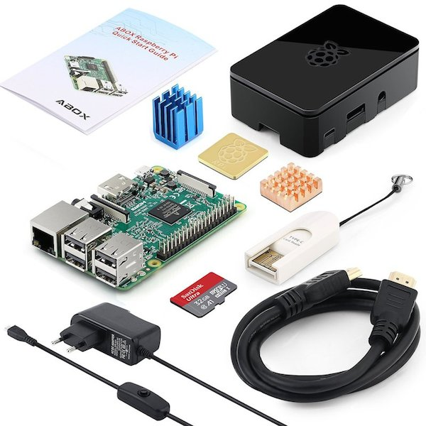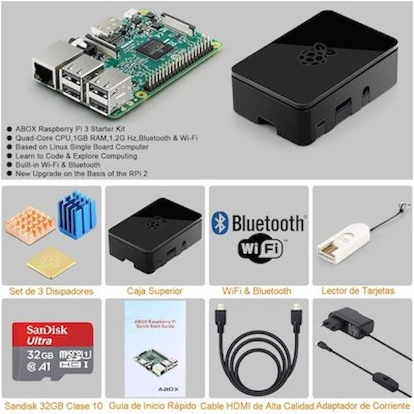
Este kit es interesante porque ya incluye cable hdmi para conectar al monitor, lector de tarjetas SD, tarjeta SD de 32GB, cable de alimentación con un botón añadido de encendido/apagado, una caja para proteger la placa y un pack de disipadores para añadir a la placa y disipar de una manera mas eficiente el calor que genera la placa.
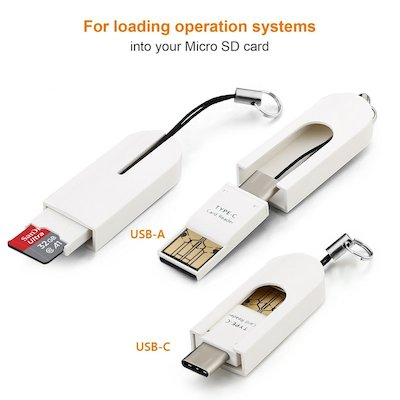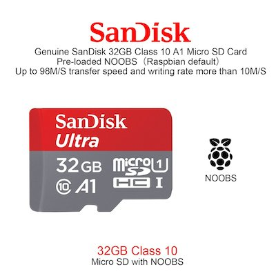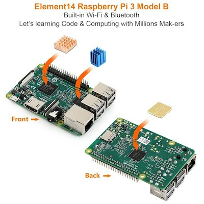
Además se ha optado por la adquisición de una caja extra que presenta un diseño más atractivo e incluye ventilador junto a los disipadores, que ayudan aún más a extraer el calor generado por la placa, Aquí. La caja incluye un manual de montaje bastante sencillo e intuitivo.
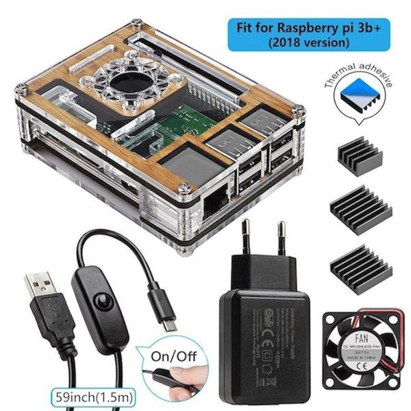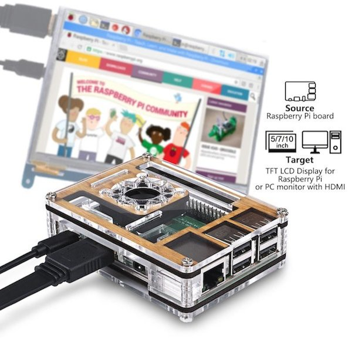
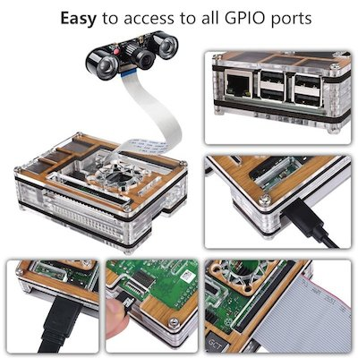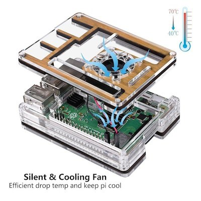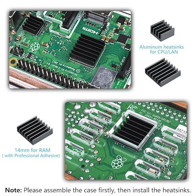
A continuación se detalla la ficha completa de características de la Raspberry Pi
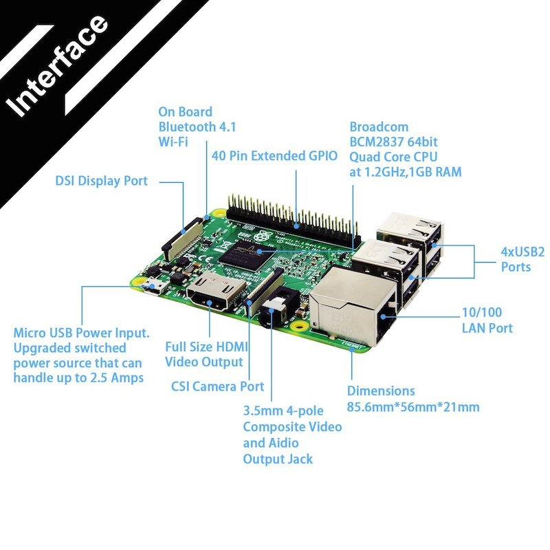
Esta página forma parte del proyecto Mini servidor para prácticas ASIR por Nacho López, que se distribuye bajo una Licencia Creative Commons Reconocimiento-CompartirIgual 4.0 Internacional (CC BY-SA 4.0).